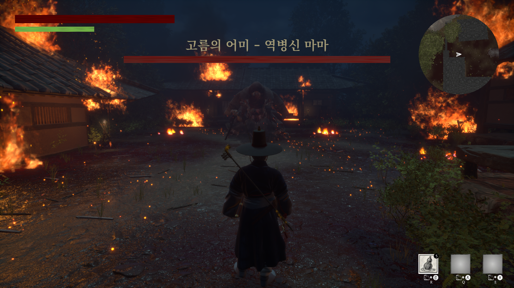
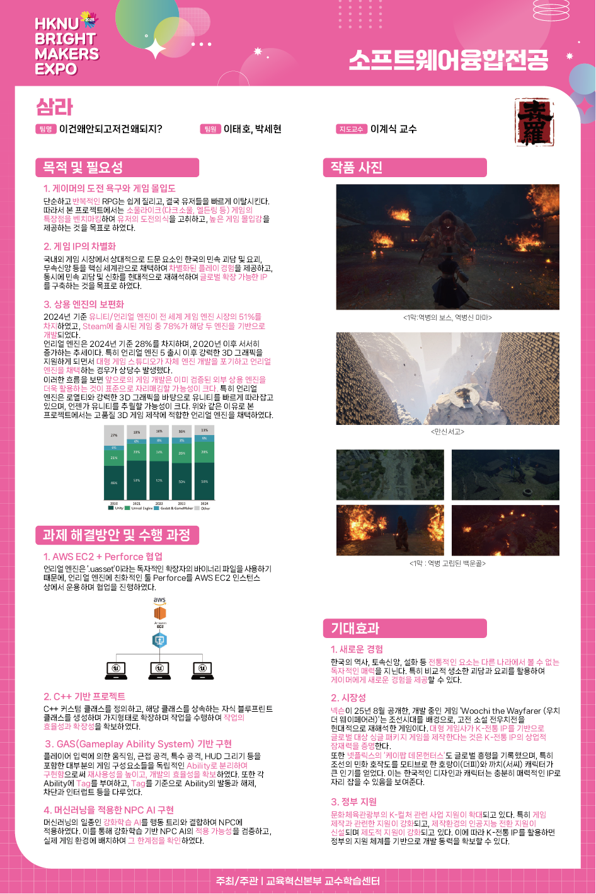

Project Samra
개발기간 : 2024.12 ~ 2025.11 (약 12개월)
개발인원 : 프로그래밍 2인, 디자인 2인
개발환경 : Unreal Engine 5
사용기술 : C++, BluePrint, P4V, Learning Agent

프로젝트 소개
국내외 게이머들에게 생소한 한국의 무속신앙, 민속 괴담과 설화, 요괴에 관한 이야기를
현대적으로 재해석하여 스토리에 녹여낸 소울라이크 게임입니다.
플레이어는 설화 속 이야기에 들어가 훼손된 이야기를 복구하며
설화를 훼손시킨 요괴들을 해치워 나갑니다.
본 프로젝트는 디자인 팀원과 협업을 통해 진행되었습니다.
주요 기능
· C++과 Blueprint를 활용한 보스 및 몬스터 행동 로직 구현
· Unreal Engine 5 기반의 게임플레이 프레임워크 설계 및 구현
· Learning Agent를 활용한 플레이어 적응형 보스 AI 시스템
· P4V(Perforce)를 활용한 팀 협업 버전 관리
담당 역할
· UI 설계 및 구현 (HUD, 메뉴, 인터랙션 등)
· Gameplay 시스템 설계 및 C++ 구현(퀘스트, 상호작용 등)
· Learning Agent를 활용한 플레이어 행동 패턴 기반 보스 AI 구현
인게임 플레이 영상
게임 보고서 포스터
